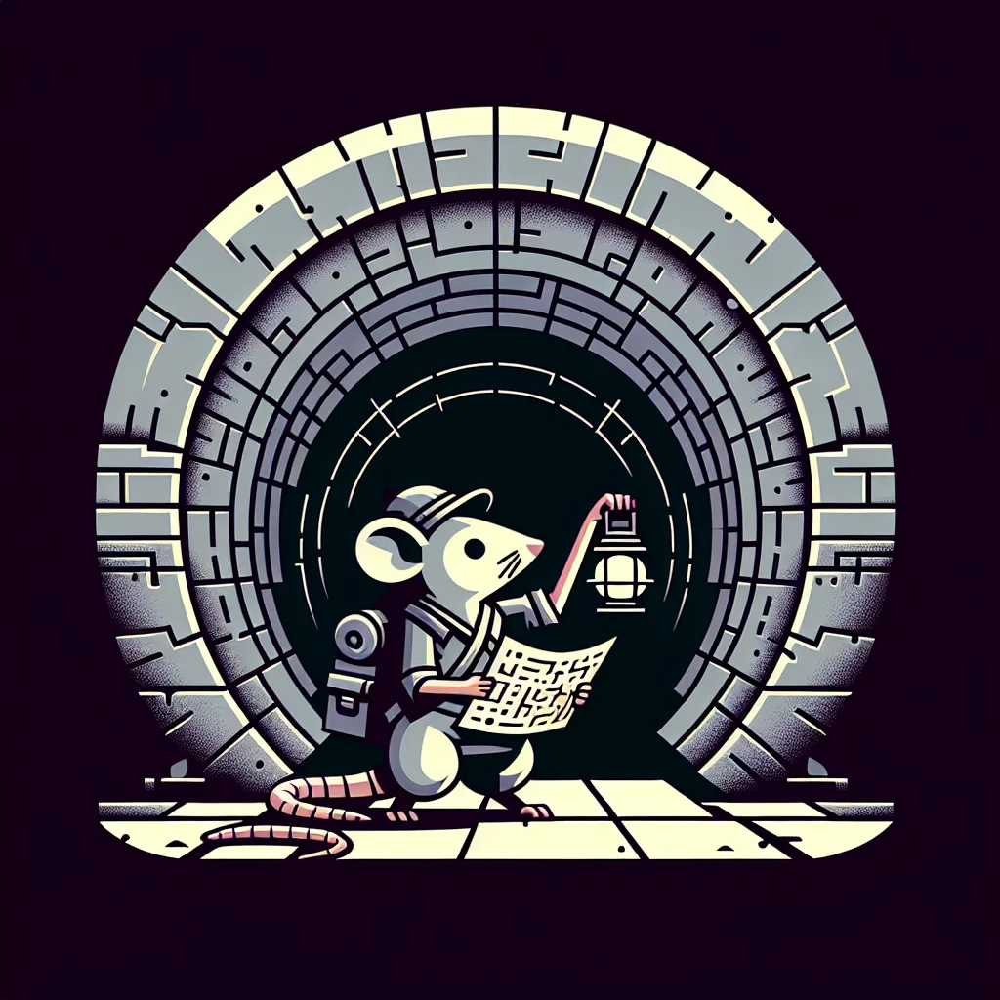

{kind=link}
{kind=link}
Hidden beneath the bustling streets of Ratopolis lies a labyrinthine network of tunnels, often whispered about but rarely seen. These mysterious passages have a storied past, serving as escape routes during the Great Cheese Famine and refuges during turbulent times. Today, brave rat explorers and historians are mapping these elusive tunnels, uncovering their rich history and potential modern-day uses.
The origins of the tunnels are rooted in survival. Built during the Great Cheese Famine, they provided clandestine paths for ration smuggling and safe havens during conflicts. Over time, these tunnels became integral to Ratopolis's history, used for secret meetings and as shelters. Squeaky O'Cheddar, a well-known historian, remarked, "These tunnels are a testament to our ancestors' resilience and ingenuity."
Recently, modern-day explorers like Whiskers McTunnel have taken up the challenge of mapping these tunnels. "Navigating these tunnels is like finding a needle in a haystack of cheese!" McTunnel exclaimed. The ongoing exploration efforts are fraught with navigational hazards such as collapsing passages and flooding, making this a perilous endeavor.
Technological advances are aiding these explorers. Modern mapping tools and drones have become essential in accurately charting these subterranean networks. Collaborative efforts with universities and research institutions have also provided invaluable resources, facilitating a deeper understanding of the tunnels' complexity.
Current explorers have discovered that these tunnels may hold more than just historical significance. Their potential for modern-day applications, such as transportation and storage, is being actively explored. However, these utilities come with their own set of challenges, including ethical considerations regarding ownership and preservation. The question of who owns these tunnels and how they should be preserved is a contentious issue among locals.
Legal expert Nibbles Whitetail emphasizes the importance of balancing progress with preservation. "While these tunnels offer remarkable potential, we must ensure that we honor their historical significance and protect them for future generations," he asserted.
The community's response to the discovery of these tunnels has been overwhelmingly positive. Local resident Cheddarina Whiskertail expressed her excitement, saying, "I always knew there was more beneath our paws than meets the eye. It's thrilling to think about what else we might discover!" The newfound interest in local history has sparked numerous community initiatives aimed at preserving and protecting the tunnels.
Moreover, these discoveries present opportunities for tourism and educational programs. Plans for public tours and community-led preservation efforts are already in the works. These initiatives aim to educate young rats about their rich heritage and inspire a sense of pride in their city's history.
Nevertheless, some skeptics argue that the risks of navigating these tunnels outweigh their potential benefits. Concerns about the safety and legal disputes over tunnel ownership raise valid points that must be addressed. Balancing historical preservation with modern utilization remains a delicate task.
As Ratopolis continues to uncover its hidden treasures, the secret tunnels under its streets stand as a symbol of the city's multifaceted history and potential future. The ongoing exploration not only sheds light on the past but also opens up possibilities for innovative uses.
In conclusion, as we delve into the subterranean heart of Ratopolis, we must remember to honor the past while responsibly embracing the future. The discovery of these tunnels reconnects us with our roots, inspiring us to approach our city's development with a sense of curiosity and respect. How we navigate this balance will define the legacy we leave for future generations of Ratopolis.
Looking for more in-depth news and exclusive content? Follow RAT TV for real-time updates, behind-the-scenes insights and the latest breaking news.
Underground Railroad: The Secret Tunnels of Ratopolis
Hidden beneath the bustling streets of Ratopolis lies a labyrinthine network of tunnels, often whispered about but rarely seen. These mysterious passages have a storied past, serving as escape routes during the Great Cheese Famine and refuges during turbulent times. Today, brave rat explorers and historians are mapping these elusive tunnels, uncovering their rich history and potential modern-day uses.
3 minute read •
Comments

Comments